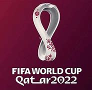
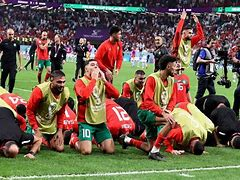

Le Maroc 2022
Le Maroc a réalisé une performance exceptionnelle à la Coupe du Monde, se démarquant lors des qualifications africaines en dominant son groupe avec six victoires consécutives. Malgré un tirage difficile aux côtés de la Belgique, de la Croatie et du Canada, le Maroc a brillé en remportant tous ses matchs de la phase de groupes. Par la suite, le Maroc a réalisé un exploit historique en atteignant les demi-finales du tournoi, en éliminant l'Espagne aux tirs au but en huitièmes de finale et en battant le Portugal en quarts grâce à un but de Youssef En-Nesyri. Malgré la défaite serrée face à la France en demi-finale et les controverses liées à certaines décisions arbitrales, l'esprit combatif du Maroc s'est maintenu lors du match de classement contre le Brésil, se terminant par une défaite 3-1. Le Maroc a ainsi obtenu la quatrième place du tournoi, suscitant l'admiration mondiale pour sa performance exceptionnelle et son esprit sportif.
 